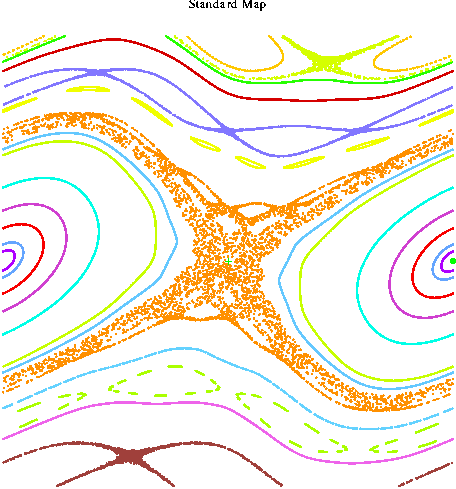

This illustrates a generic unfolding of a homoclinic tangency: Specifically, a theorem from dynamical systems says that (generically) every homoclinic tangency is an accumulation point of homoclinic tangencies in parameter space. You can watch the homoclinic tangencies form from the unstable manifold, because it loops around close to itself again and again (by the lambda lemma).
The movie repeats forever.
Further: Below is picture of the whole region x=0..1, y=0.5..1.5 for parameter k=0.84, followed by a few iterates for this parameter to show you the dynamics of the map.

Credits:
Starring: The Standard Map
Director: Evelyn Sander
Camera operator: DSTool
Editing and Production: GifMerge
Theorem: Palis and Takens, Hyperbolicity and sensitive
chaotic dynamics at homoclinic bifurcations.
Filmed on location on the Surface of the Cylinder
Caterer for Dr. Sander: Thomas Wanner
Parameters b=1, k=0.82..0.84
Approximate Zoom x=0.5..0.65, y=0.85..1
The Equation
x1 = x + y1
y1 = b*y - k/(2*pi)*(sin(2*pi*x))